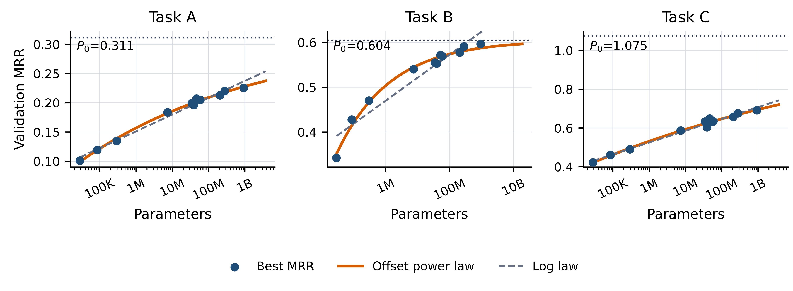
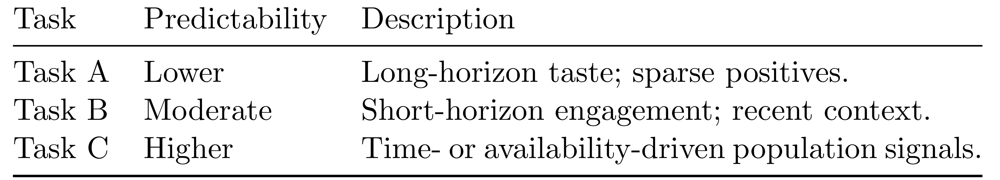

Towards Generalizable and Efficient Large-Scale Generative Recommenders：面向可泛化和高效的大规模生成式推荐器
论文入口：arXiv:2605.23312。作者：Qiuling Xu, Ko-Jen Hsiao, Moumita Bhattacharya。机构口径：Netflix Research。代码/项目页状态：论文 comments 指向 Netflix Tech Blog；未核验独立代码仓库。主类别：推荐算法；公开日期：arXiv submitted 2026-05-22。
研究 Netflix 生产规模 title recommendation 中生成式推荐 backbone 的 scaling、训练效率、serving latency 和新 title 泛化，把 2M 到 1B 模型的收益放进 production-shadow 证据链。 本笔记按当前流水线的精读要求重写：先记录公式清单、方法模块清单和图表清单，再围绕论文原文的任务设定、训练/推理链路、实验表和工程边界展开。
1. 背景和问题
Netflix 这篇论文讨论的是生成式推荐从研究原型走向生产系统时的四个问题：扩模型是否真的提升下游任务，训练成本是否可承受，服务延迟是否匹配缓存推荐流程，新 title 和低曝光 item 是否能泛化。它把用户行为建模为事件序列，让共享 generative backbone 支持多个 title recommendation 任务，但同时强调预训练收益不会自动转化为应用收益。
论文最重要的立场是“task-dependent scaling”。不同推荐任务对模型规模的 headroom 不一样，有些任务在 2M 到 1B 范围内继续受益，有些任务接近经验上限。继续加参之前，必须用 scaling-law 诊断任务是否还有空间。这个观点对工业推荐很关键，因为大模型训练和重复 retraining 成本很高，不能只凭“更大模型更强”的经验投入。
另一条主线是效率。生成式推荐如果按 next-token 训练，却在服务时缓存一段时间后再使用，训练目标和 serving 场景可能错位。论文提出 multi-token prediction、sampled softmax、projected decoding head、semantic item towers 和 collaborative-embedding masking 等技巧，试图同时解决训练计算、输出打分和冷启动泛化。
更具体地说，Towards Generalizable and Efficient Large-Scale Generative Recommenders 的问题不应被读成单点模型改进，而应读成系统状态如何被建模、验证和服务化。旧链路通常把关键状态分散在人工规则、离线日志、缓存、业务策略或一次性 prompt 里，最终只能看到平均指标，却无法解释指标变化来自哪里。本文把这些状态拉回可观察接口：输入是什么，输出是什么，何时训练，何时推理，失败时如何定位。
这也是它和今天其他论文共同的地方：LLM 方向在处理 skill、memory、context，推荐方向在处理 user story、retriever distillation 和 generative backbone。它们都说明模型能力越来越依赖外部状态管理。阅读这篇论文时，我会持续追问三个问题：第一，论文是否明确记录了状态来源；第二，方法是否有独立验证或对照；第三，结果是否足以支持生产迁移，而不是只在某个离线表里好看。
补充背景时，Netflix 这篇论文的关键词是 production-scale。生成式推荐在学术论文里常被描述为把 item 序列当作语言序列，但真实流媒体系统还要处理标题目录更新、版权可播性、缓存、延迟、重复训练和多任务迁移。论文没有把生成式模型当成万能替代，而是把它放进生产约束中评估。
Task-dependent scaling 是本文最值得借鉴的概念。推荐任务的收益不是模型越大越统一：有些任务数据充足、目标清晰，扩模继续有效；有些任务受噪声、上限或 serving mismatch 限制，扩模收益很快变小。先诊断 headroom 再决定加参，是比盲目扩模更稳的路线。
这篇论文也解释了为什么训练目标和服务流程必须一致。用户行为序列里的 immediate next title 未必等于推荐缓存真正曝光时的最佳 title。如果服务系统会缓存结果，训练时只做 next-token prediction 就可能优化错时间尺度。MTP 的意义正是在训练目标中加入更长时间范围。
背景还要强调 Netflix 场景的目录和业务约束。Title recommendation 不是开放生成任意 item，候选必须满足可播性、地区版权、内容策略和用户可见性。生成式模型即使能预测一个相关 title，也必须映射回当前可展示目录。因此论文讨论 efficient serving 和 semantic item towers，本质上是在把生成式模型接回生产推荐链路。
背景补充一点：生成式推荐的“可泛化”在 Netflix 场景里主要指跨任务和新 title，而不是开放域生成。系统仍在受控目录里推荐 title，只是 backbone 学到的用户事件序列表示可以迁移到不同 recommendation task，并通过语义 tower 支持新内容。这个边界很重要。
补充背景：Netflix 论文也说明推荐系统里的 scaling 不是纯模型问题。内容目录、用户活跃度、缓存策略、训练刷新频率和业务目标都会改变扩模收益。把这些因素排除或固定后，模型规模曲线才有解释意义。
2. 方法
方法章是本笔记的主体。先列公式和图表清单，再按论文真实模块解释训练与推理链路。主文对象包括 Figure 1 的三类任务 scaling-law 拟合、Table 1 的任务类别、Table 2 的 scaling-law fit-error、Figure 2 的训练 FLOPs、Figure 3 的 next-token training 与 delayed cached serving mismatch、Figure 4 的 cache stale MRR degradation、Figure 5 的 MTP 场景比较、Figure 6 的 semantic title metadata、Figure 7 的 weekly production-shadow MRR。本文截图保留 scaling-law 图和 production-shadow 或 MTP 结果图，其他对象在正文解释。
2.1 公式清单与方法地图
offset scaling law。
符号解释：N 是 backbone 参数规模，M(N) 是任务指标，M∞ 是经验上限；该式用于判断任务是否还有扩模 headroom。 这条公式在笔记中的作用是把论文描述转成可检查变量，复现时应能在数据、日志或配置中找到对应字段。
log-linear 对照。
符号解释：论文将 offset scaling 与先前 generative recommendation 中常用 log-linear 形式比较，指出有限范围内 log-linear 可能拟合单调提升，但不能表达接近上限的趋势。 这条公式在笔记中的作用是把论文描述转成可检查变量，复现时应能在数据、日志或配置中找到对应字段。
multi-token prediction。
符号解释：模型不只预测 immediate next title，而是预测多个未来 token；w_i 控制不同未来位置的权重。 这条公式在笔记中的作用是把论文描述转成可检查变量，复现时应能在数据、日志或配置中找到对应字段。
语义 item tower。
符号解释：语义 tower 用 metadata/graph event 表示补充 item embedding，最终用用户状态和 item 向量打分。 这条公式在笔记中的作用是把论文描述转成可检查变量，复现时应能在数据、日志或配置中找到对应字段。
2.2 论文核心流程
方法首先用 scaling-law 诊断任务 headroom。论文把不同推荐任务类别放在 2M 到 1B backbone 规模下比较，并拟合 offset scaling curve。若任务曲线仍有明显上升空间，扩模可能值得；若曲线接近经验上限，继续增大模型只会浪费训练成本。Table 1 定义任务类别，Table 2 比较 fit-error，说明作者不是只凭主观趋势判断，而是把扩模收益形式化。
训练效率是第二个模块。生成式推荐的输出空间是 title vocabulary，直接 full softmax 会非常昂贵。论文使用 sampled softmax 和 projected decoding head 降低输出打分成本。Figure 2 展示训练 FLOPs per token 的估计，文本提到 sampled softmax 加 d/8 projected head 可把每 token FLOPs 控制在 3.56e8 量级。这里的重点不是单个数值，而是把重复训练成本纳入设计。

补充看这张图时，重点是三类任务的斜率和上限不同。Scaling law 不是为了证明 1B 一定优于 2M，而是用曲线判断继续增加参数是否还有 headroom。若某个任务曲线已经接近平台期，继续扩模可能不如改训练目标或服务链路；若曲线仍有明显下降空间，才说明增加 backbone 规模可能带来可兑现收益。
这张 scaling-law 图是方法章和实验章之间的桥梁。它展示不同任务类别随 backbone 规模增大呈现不同曲线：有的任务仍有明显 headroom，有的任务接近上限，有的任务收益较弱。读图时不能只看 1B 模型是否最高，而要看曲线形状和经验上限 M∞。若某任务在当前数据和目标下已接近上限，继续扩模可能不如改数据、改目标或改 serving；若曲线仍上升，扩模才有合理依据。这个思路可以直接用于本地推荐任务的扩模决策。
2.3 训练目标与优化控制
serving mismatch 是第三个模块。Next-token training 默认模型预测紧接上下文之后的 item，但生产推荐常常缓存结果，用户真正看到推荐时已经过了一段时间。Figure 3 展示 Title A 在训练标签和缓存 serving 中的时间错位，Figure 4 通过模拟不同 serving delay 衡量 MRR degradation。这个问题很实际：如果模型学的是“下一秒要看什么”，而服务系统用的是“几分钟后仍有效的推荐”，目标就不匹配。
Multi-token prediction 用来缓解这种错位。模型同时预测多个未来位置，而不是只预测 immediate next title。不同未来 token 可以有不同权重，使模型学到更稳定的短期兴趣轨迹。Figure 5 比较 NTP 和 MTP 在 online serving 与 delayed cached serving 两种场景下的 MRR 变化。若 MTP 在延迟缓存场景更稳，说明训练目标更接近生产使用。
2.4 推理链路、服务约束与系统接入
semantic item towers 和 collaborative-embedding masking 负责新 title 泛化。传统 item embedding 对低曝光或新内容不友好，因为协同信号不足。语义 tower 从 metadata、graph event 或内容信息生成 title representation，使新 item 也有可用向量；collaborative masking 则迫使模型在缺少协同 embedding 时利用语义信息。Figure 6 展示 encoder events 和 decoder title representations 如何共享 semantic metadata。
最终，production-shadow evaluation 把候选模型放进真实用户影子评估中。候选模型不影响用户体验，但在相同请求上记录 MRR 等指标。Figure 7 展示 1B backbone 与 2M baseline 在 1M 用户上的 weekly MRR 对比。这个设计比纯离线更接近生产，但仍不等于线上 A/B，因为 shadow 模型不改变曝光和反馈。
2.5 复现时应检查的实现细节
复现 Towards Generalizable and Efficient Large-Scale Generative Recommenders 时，应把论文模块拆成可观测的输入、输出、训练目标、推理路径和失败样本。每个模块都要记录数据来源、版本、延迟、成本、可回滚策略和与基线的差异。只有这些信息完整，论文结果才有本地迁移价值。
2.6 模块间信号流与落地检查
Scaling-law 模块先固定数据、目标和任务类别，只改变 backbone size。这样可以把性能变化主要归因到模型规模，而不是特征或训练数据变化。offset scaling law 允许曲线接近经验上限，适合判断任务是否仍有 headroom。
训练效率模块处理输出空间成本。Title vocabulary 很大，full softmax 会让每次 retraining 代价过高。Sampled softmax 降低参与打分的负例数量，projected decoding head 降低输出投影维度，两者共同减少 FLOPs。论文把训练 FLOPs per token 画出来，是为了说明效率改造不是附属优化，而是生成式推荐能否日常迭代的前提。
Serving mismatch 模块把时间维度拉进方法。推荐列表通常不是实时逐 token 生成后立刻曝光，而是经过缓存、队列或批处理。若训练目标只预测 immediate next item，模型可能偏向过短时间窗口。Figure 3/4 用 delayed cached serving 说明这种错位会造成 MRR degradation。
MTP 模块让模型预测多个未来 title。它不只是增加训练标签数量，而是改变目标的时间尺度，使模型学习更稳定的未来偏好。权重 w_i 决定不同未来位置的贡献，实践中应根据缓存延迟和业务目标调节。
Semantic item tower 模块解决新 title 泛化。新内容缺少协同交互，传统 embedding 冷启动困难。语义 tower 从 metadata 或 graph event 生成 item 表示，并与 decoder title representation 共享信息；collaborative-embedding masking 则在训练中模拟协同信号缺失，迫使模型使用语义信息。
Production-shadow evaluation 是方法闭环。候选模型在真实用户请求上打分但不影响曝光，系统记录 MRR 等指标。它比离线回放更接近生产请求分布，又比 A/B 风险低。论文用它比较 1B backbone 与 2M baseline，是扩模进入线上前的中间证据。
Scaling-law 诊断需要固定任务定义。若训练数据、样本权重或评估指标同时变化，曲线就无法解释模型规模贡献。论文强调 ablation varies only backbone size，这是正确做法。本地扩模实验也应先冻结数据和目标，否则 headroom 判断会被其他因素污染。
Offset scaling 的 M∞ 不能机械外推。有限规模点拟合出的上限可能超过指标理论上限，论文也提到 Task C 的 P0 接近 1.075。这说明 scaling law 更适合比较任务相对 headroom，而不是精确预测极限分数。
Sampled softmax 和 projected head 的组合解决两个不同瓶颈。前者减少每步参与计算的候选 title，后者降低隐藏维到输出层的投影成本。若只用 projected head，仍要对大量 title 计算；若只用 sampled softmax，输出矩阵维度仍大。两者结合才适合频繁 retraining。
MTP 的权重设计应和缓存延迟匹配。若服务结果通常 5 分钟内曝光，未来 token 位置应覆盖这个时间尺度；若结果可能隔天仍被使用，MTP 也不一定足够。论文用不同 serving scenarios 比较 NTP/MTP，是为了把训练目标与产品链路对齐。
Semantic tower 的输入质量决定冷启动效果。Netflix title metadata 通常较丰富，包括类型、演员、文本描述和 graph 关系；其他平台若 metadata 粗糙，semantic tower 收益会下降。复现时应把 metadata 完整度作为分桶，而不只看新 item 平均指标。
Production shadow 的日志也要小心。影子模型在真实请求上打分，但它没有改变用户看到的内容，因此不会产生新的反馈分布。它适合筛掉明显不行的模型，也适合比较稳定趋势；但最终策略、探索和多样性仍要 A/B 验证。
Task A/B/C 的 scaling 结果应转成资源分配策略。对于仍有 headroom 的任务，可以继续扩大 backbone 或增加数据；对于接近上限的任务，应优先改目标、特征或业务约束；对于收益不稳定的任务，应停止盲目扩模。这样 scaling law 才真正帮助工程决策。
Repeated training cost 是推荐系统特有压力。内容目录和用户兴趣变化很快，模型不能半年重训一次。Sampled softmax、projected head 和更高效的训练目标，是为了让大 backbone 也能跟上迭代节奏。若训练成本过高，即使 shadow 指标好，也不适合日常生产。
Serving latency 还要考虑候选生成方式。生成式 backbone 可以给 title 打分，也可能生成候选；但最终仍要与现有召回、过滤和排序结合。若模型输出不可播 title 或重复 title，后处理会吞掉收益。论文关注 decoder title representations，说明输出层设计与服务结果直接相关。
MTP 与缓存延迟的关系可以更细。未来 token 不是越多越好：太近的 token 仍受 immediate consumption 影响，太远的 token 可能噪声大。权重 w_i 应根据真实曝光延迟和用户行为半衰期调节。不同产品线的最佳未来窗口可能不同。
Semantic item tower 也有冷启动以外的作用。它可以帮助模型理解相似 title、系列内容、演员主题和类型偏好，使低曝光 item 获得合理初始位置。但如果 metadata 有偏差或过度营销化，语义 tower 也会把错误标签带进推荐。
Production shadow 的 weekly 曲线应和模型发布节奏结合看。若每周 MRR 提升稳定，说明模型对目录和用户变化有一定鲁棒性；若某周突然下降，可能是新内容批次、节假日行为或缓存策略改变。影子评估应成为模型上线前的持续监控，而不是一次性表格。
Netflix 这篇方法还需要看多任务共享的负迁移。共享 backbone 可以降低维护成本，但一个任务的梯度可能伤害另一个任务。Scaling-law 只说明规模收益，不能完全说明任务间干扰。实际训练应记录每个任务的 loss、指标和梯度冲突，必要时使用任务权重或 adapter。
Item 表示还要处理目录变动。Title 下架、地区版权变化和新季上线都会改变可推荐集合。生成式模型输出层如果更新不及时，会给不可用 title 过高分。Semantic tower 可以缓解新 title，但目录可用性仍应由服务层强约束。
Production shadow 之后还要有策略模拟。若 1B 模型把更多相似 title 排到前面，MRR 可能上升，但页面多样性下降。策略模拟可以在不真实曝光的情况下检查重复、类型集中和新内容覆盖。
方法章还应补充分层 serving。1B backbone 可以作为高质量模型，但不一定每个请求都要调用。系统可以按用户活跃度、候选不确定性、新 title 覆盖需求或页面重要性决定是否使用大模型；低风险请求继续使用小模型或缓存。这样能把扩模收益集中到最需要的场景。
还要处理 repeated-training schedule。若目录和用户行为变化快，模型需要定期更新；但 1B 模型重训成本高。可以采用 backbone 低频更新、item tower 高频更新、adapter 或 head 高频更新的分层训练策略。论文讨论 repeated-training cost，正好指向这个问题。
方法章再补充一个候选约束。生成式 backbone 即使输出 title 分数，服务层仍要过滤地区不可播、用户已看完、不适龄、版权过期或策略禁止内容。过滤发生在模型之后，会改变最终排序分布。因此训练和 shadow 评估应尽量使用与线上一致的可用候选集合。
多任务 backbone 还需要任务适配头。不同任务可能关注续看、发现、新内容扶持或个性化召回。如果所有任务共享完全相同的输出头，可能表达能力不足；如果每个任务头完全独立，共享收益又下降。论文讨论 shared backbone 与任务 headroom，实际实现应在共享和专用之间找到平衡。
对于新 title，semantic tower 的更新频率可能高于 backbone。一个实用方案是低频训练 backbone，高频更新 metadata encoder 或 item representation。这样新内容能快速进入推荐，而不需要每次重训大模型。
Netflix 这篇工作的重点在于把生成式推荐模型放进规模化实验框架，而不是只展示一个模型结构。Scaling law 部分要求训练数据、模型规模和计算预算能被统一记录；多任务部分要求播放、点击、继续观看等目标共享表示但保留任务差异；语义元数据部分则试图把 item cold start 与内容理解纳入同一个检索空间。三者合起来，形成的是一个可持续扩张的推荐基础模型栈。
生产影子评估的设计同样属于方法贡献。影子系统不直接影响用户体验，但可以在真实流量分布上观察候选召回、排序分数、陈旧向量和服务延迟。对于生成式推荐，这比单纯离线 holdout 更关键，因为模型可能在训练集上学到较好的序列预测，却在上线候选池、缓存策略或内容更新频率变化时退化。论文把 stale MRR、serving mismatch 和 production-shadow MRR 放在同一组证据中，说明它关注的是完整链路可靠性。
3. 实验结果
实验章按证据链阅读，而不是只摘最高指标。Towards Generalizable and Efficient Large-Scale Generative Recommenders 的实验对象包括主结果、消融、效率或线上/影子评估；每一类结果都要和论文主张一一对应。
3.1 实验设置与主结果
实验先回答扩模问题。Figure 1 和 Table 2 比较 offset scaling law 与 log-linear fit。文本提到 Task A 的经验上限 P0 为 0.311，而 Task C 的 P0 接近 1.075，甚至略高于 MRR 理论上限，说明拟合也会受有限样本范围影响。这个细节很重要：scaling law 是诊断工具，不是绝对真理。
训练效率实验关注 FLOPs。Figure 2 比较 full decoding、sampled softmax、projected head 等设置下的训练计算。推荐系统常需要频繁 retraining，如果每次训练 1B backbone 都成本过高，就无法跟上内容和用户兴趣变化。论文把训练 FLOPs per token 作为主要指标之一，说明它关心的是可持续训练。

补充看 shadow MRR 时，要注意它比离线 holdout 更接近上线风险。生产影子评估在真实流量和真实候选分布下运行，但不直接影响用户，因此能暴露缓存、标题更新、服务延迟和候选池不一致带来的退化。1B backbone 若在周级 shadow 指标上持续优于 2M baseline，才说明扩模收益没有被生产链路吞掉。
这张 weekly production-shadow 图展示了 1B backbone 相对 2M baseline 在真实用户影子流量上的 MRR 走势。它的价值在于跨周稳定性：如果提升只出现在单周，可能是样本波动；如果多周保持优势，说明模型扩模和效率改造更可能具有生产价值。读图时仍要记住 shadow evaluation 的边界：模型没有影响用户实际看到的内容，因此反馈闭环没有变化。它证明的是候选模型在相同日志请求上的排序潜力，不是最终线上业务收益。
3.2 消融、效率和分桶证据
serving 延迟实验由 Figure 3/4 支撑。Figure 3 说明 next-token 标签和缓存服务之间可能错位，Figure 4 展示 cached outputs stale 后 relative MRR degradation。不同任务对 delay 的敏感度不同，说明服务架构会改变训练目标的有效性。若一个任务对 stale 特别敏感，就需要更短缓存、更频繁刷新或改用 MTP。
MTP 实验由 Figure 5 展示。NTP 在即时场景可能足够，但 delayed cached serving 下更容易退化；MTP 通过预测多个未来 token，使模型对短时间延迟更稳。这个结果对短视频和电商也有启发：推荐结果生成和曝光之间往往有队列、缓存、审核或策略延迟，训练目标应反映这种延迟。
3.3 结果边界与复现风险
冷启动泛化实验围绕 Figure 6 的 semantic item towers。语义 metadata 让新 title 不完全依赖协同 embedding。collaborative masking 则强迫模型在训练时模拟缺少协同信号的情形。这个设计和多模态推荐中的 semantic ID、content tower 类似，但 Netflix 论文把它放进生成式 backbone 的 encoder/decoder 表示共享里。
Figure 7 的 production-shadow 是最接近生产的证据。论文在 1M 用户影子评估上比较 1B backbone 和 2M baseline 的 weekly MRR，显示更大 backbone 在某些任务上有稳定优势。但 shadow MRR 仍不能直接等同于观看时长、留存或用户满意度，因为候选模型没有改变真实曝光。进入线上 A/B 前，还需要策略、多样性、库存和用户体验指标。
补充实验时，Table 1 的任务类别和 Figure 1 必须一起看。不同任务类别的 scaling 曲线不同，说明共享 backbone 并不等于任务同质化。某些任务继续受益，某些任务接近上限，某些任务可能更需要改目标或数据。
Table 2 的 fit-error 比较提醒我们 scaling law 只是经验模型。有限规模范围内 log-linear 也可能拟合，但 offset form 更能表达饱和趋势。若本地数据点很少，不能过度相信拟合外推。
Figure 5 的 MTP 对比应结合服务延迟读。若 online immediate serving 和 delayed cached serving 的最优目标不同，推荐系统训练就必须知道自己的曝光链路。短视频、电商和广告也会遇到相似延迟，只是延迟来源不同。
Figure 7 的 shadow MRR 是强证据，但不是最终证据。它排除了用户体验风险，却也没有形成新的曝光反馈。真正上线还要看观看时长、留存、多样性、新内容扶持、重复推荐和策略约束。
实验中 Figure 4 的 stale degradation 可以直接转成服务监控。每个推荐系统都应测量推荐生成到曝光之间的延迟分布，再看模型对不同延迟的指标退化。若延迟尾部很长，单纯优化模型精度可能不如优化缓存刷新。
Figure 6 的 semantic title metadata 对新内容很重要。若 semantic tower 能在缺少协同 embedding 时仍提供可用表示，生成式 backbone 就能更快覆盖新 title。这个实验应和新 title、低曝光 title、语义相似 title 分桶一起读。
实验补充一个重要边界：MRR 关注排序位置，但流媒体业务还关心观看时长、满意度、多样性和新内容发现。生成式推荐可能提高 MRR，却减少探索或加剧热门内容集中。后续 A/B 必须加入这些业务指标。
Scaling-law 结果还应按任务数据量解释。某些任务 headroom 小，不一定是模型能力到顶，也可能是标签噪声、数据不足或评估指标不敏感。扩模停止前应先确认瓶颈来源。
实验补充一点：Figure 7 的 weekly 曲线应看方差和趋势。如果提升稳定且没有明显回撤，说明模型对时间变化较鲁棒；如果波动大，应先找出对应的内容批次或用户群。
MTP 的实验还应记录不同 future horizon 的权重敏感性。一个统一权重未必适合所有任务，短期继续观看和长期留存可能需要不同 horizon。
实验上，建议把 shadow MRR 按请求不确定性分桶。如果大模型主要改善高不确定请求，就适合做 selective serving；如果所有请求均匀改善，才适合更广泛替换。
实验补充：建议把 production-shadow 与离线时间切分结合。Shadow 更接近真实请求，但成本高；时间切分便于快速迭代。二者结果一致时，模型更可信；不一致时，应优先排查曝光分布和缓存延迟。
4. 总结
4.1 我的判断
我的判断是，这篇 Netflix 论文适合作为生成式推荐生产化的系统清单。它不是单纯说 1B 模型更好，而是同时问任务是否还有 headroom、训练是否可重复、服务延迟是否匹配、冷启动是否可泛化、shadow 指标是否稳定。
4.2 工程启发与复现建议
工程启发包括：扩模前先做任务级 scaling-law 诊断；训练目标要匹配缓存 serving；sampled softmax 和 projected head 可降低重复训练成本；语义 tower 对新 item 很关键；shadow evaluation 是 A/B 前的必要阶段。
4.3 局限与后续跟进
局限包括：production-shadow MRR 不等于真实观看时长或留存；1B retraining 成本仍高；共享 backbone 可能带来任务间负迁移；semantic metadata 的质量会影响冷启动；sampled softmax、MTP、semantic tower 的贡献需要更多独立消融。后续应把本地任务按 headroom 分组，比较 NTP/MTP 在缓存延迟下的退化，测试新内容和低曝光内容分桶，并把 shadow 与线上 A/B 差异写成评估清单。
后续复现应先做任务级 headroom 诊断：用多个模型规模跑同一数据和目标，拟合是否接近上限；再测试 NTP 与 MTP 在不同缓存延迟下的退化；最后对新 item、低曝光 item 和语义相似 item 做分桶。若没有 shadow 环境，至少要做时间切分回放，避免随机切分高估泛化。
后续复现要避免把生成式推荐理解为全链路替代。更现实的路线是让生成模型承担候选扩展、意图建模或冷启动补充，再由现有排序、策略和多样性层做最终控制。这样能利用大模型语义能力，又保留推荐系统的可控性。
总结补充：我会把这篇论文后续跟进分成三条：一是任务级 scaling 诊断工具，二是缓存延迟感知训练目标，三是新 item 语义表示。三条都可以独立复现，不必一开始就训练 Netflix 级别的 1B backbone。
最终我会把 Netflix 论文拆成三个可独立吸收的模块：headroom 诊断、cache-aware training、semantic cold-start。这样不需要一次性复现完整 1B 生产系统，也能把论文价值转化为本地实验。
总结上，Netflix 论文的生产价值在于教我们何时扩模、如何降低训练/服务成本、以及如何用 shadow 证据筛选上线候选。 我的结论是，这篇论文最适合作为“推荐基础模型工程化路线图”来读。它的价值不只在某个 MRR 数字，而在于把规模律、语义特征、多任务训练和影子上线评估串成一条可迭代路线；真正复用时，最大的工作量会落在数据治理和服务一致性上。